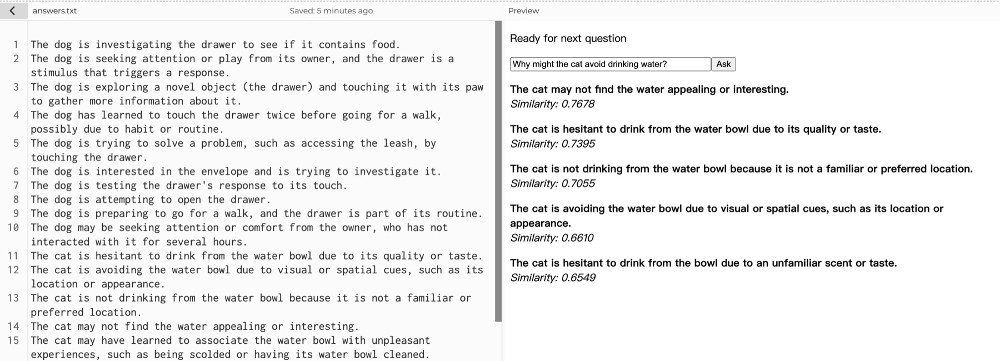

When Similarity Misses Negation
A small study of how semantic search ranks sentences that describe similar situations with opposite outcomes.
Try the search sketch
Make a minimal comparison
Using a class semantic-search sketch with her own dataset, Queena compared a cat drinking from a bowl with the same cat walking away without drinking.
A high score can still hide a difference
In the documented runs, the matching outcome ranked first, while the opposite outcome also received a relatively high score. The small dataset makes this an exploratory result.